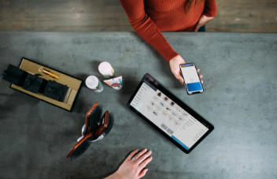

Mampukah Generasi Milennial Memimpin Bangsa Ke Depan?
Akhir-akhir ini banyak informasi yang kita dapatkan dari media yang membuat hati sesak, ngilu, dan rasa-rasanya sangat prihatin dengan negeri ini. Pada saat kita mendengar nama Zumi Zola yang merupakan anak muda bangsa yang harusnya menjadi panutan bagi kaum millennial seangkatannya, justru terjerat kasus gratifikasi yang membuat tombak negeri yang kita banggeluar dari kasus Zumi Zola, kita justru sekarang sedang dihadapkan pada kasus yang lebih mengerikan dan mengoyak batin siapapun yang mendengarnya. Adalah Haringga Sirila yang membuat kita menangis dan prihatin sedalam-dalamnya atas kejadian yang menimpa dan merenggut nyawanya pada saat ingin menonton pertandingan sepakbola.
Ada pertanyaan besar yang timbul dalam benak penulis ketika mendengar, membaca, dan menonton video amatirnya saat terjadi penggoroyokan terhadap Alm Haringga Sirla. Pertanyaan itu tergiang-giang terus di dalam pikiran sampai-sampai saya tidak mampu menahannya untuk tidak menulis disini. Pertanyaan itu adalah, "Zaman apakah ini?"Zaman batukah? zaman zionis kah? atau zaman fanatisme? Begitu beratnya hati untuk melupakan tindakan anarkis yang
tergolong tidak manusiawi tersebut. Karena menurut paham saya, dulu manusia akan membunuh orang lain hanya ketika dirinya merasa terancam nyawa atau harta. Tapi sekarang, manusia dapat dengan mudah membunuh sesamanya dengan alasan yang tidak masuk akal. Hanya karena dia suporter tim lawan yang terciduk menonton di lapangan bola? Hanya karena itukah?Melihat berbagai peristiwa yang sangat memilukan tersebut. Rata-rata kasusnya justru menjerat anak-anak muda bangsa kita. Pemuda-pemuda yang menjadi tiang untuk kepemimpinan bangsa ke depan. Jika ceritanya seperti ini, masih adakah kaum millennial yang tersisa untuk kita amanahkah tanggung tanggung atas negeri?
Kaum millennial yang saat ini mengalami krisis moral yang sangat mengkhawatirkan. Dari mulai anak muda yang duduk di kursi-kursi tinggi dalam pemerintahan, mampu anak-anak muda biasa yang tersebar dari seluruh negeri, masih adakah yang tersisa untuk kita banggakan?
Tentu saja ada. Dan tentu saja kaum millennial akan mengalami seleksi kepantasannya memimpin negeri ini di masa depan. Terlepas dari banyaknya informasi, berita, dan kejadian tidak mengenakkan yang menimpa kaum millennial, kita harus tetap berpikir positif dan sama-sama bekerja keras untuk memulai perubahan kecil.Tidak perlu bersusah payah ingin mengubah negeri ini dengan banyak hal, cukup dengan mengubah diri sendiri menjadi pribadi yang lebih beradab dan menjunjung tinggi nilai-nilai moral serta agama yang ada. Bukankah dalam hidup ini selalu ada aturan? Maka patuhi aturan yang ada dengan menyertai hati nurani kita sebagai manusia.
Jangan sampai kaum millennial kebablasan dengan cara-cara yang tidak manusiawi dan merusak diri sendiri dan orang lain. Masing-masing dari kita memegang tanggung jawab atas karunia negeri yang indah ini. Masih ingin kan melihat negeri aman, damai, dan rakyatnya bahagia untuk sepuluh tahun ke depan? Maka persiapkan dirimu untuk menjadi pemimpin negeri yang beretika dan bermoral.
Opini Lainnya
Menteri Milenial Tidak Sekadar Muda
Akhir-akhir ini banyak informasi yang kita dapatkan dari media yang membuat hati sesak, ngilu, dan rasa-rasanya sangat prihatin dengan negeri ini. Pada saat kita mendengar...
Generasi Millenial?
Siapakah generasi milenial itu? Apakah semua kita mengerti akan sebutan itu, Yang dewasa ini menjadi topik yang cukup hangat di berbagai kalangan, mulai dari segi pendidikan, teknologi, politik, maupun moral dan...

Generasi Milenial, Konsumen Zaman Now
Generasi milenial adalah generasi terbesar kedua di dunia setelah generasi baby boomers, yang lahir antara tahun 1980 -2000. Saat ini, banyak perusahaan yang menetapkan generasi milenial sebagai...
Gaya Hidup Hedonis
Gaya hidup hedonis adalah gaya hidup yang lebih mengutamakan materi daripada hal-hal lain. Remaja saat ini adalah remaja yang hausakan perhatian dari orang lain.
Nilai sosial yang mulai bergeser
Pergeseran budaya ketimuran menuju budaya kebarat-baratan sudah menjadi alarm darurat di bumi pertiwi. Sembilan puluh persen remaja di Indonesia sudah mengalami pergeseran.
Nilai sosial yang mulai bergeser
Pergeseran budaya ketimuran menuju budaya kebarat-baratan sudah menjadi alarm darurat di bumi pertiwi. Sembilan puluh persen remaja di Indonesia sudah mengalami pergeseran.